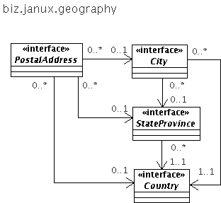

The biz.janux.geography package is quite modest in scope. It is limited to modeling PostalAddresses and strives to treat the City, State or Province, and Country associated to a PostalAddress as entities having an independent lifecycle, as illustrated below:
Nevertheless, note that the relationships between Postal Address and the various entities are mostly 0..* --> 0..1 meaning that we allow for situations where we may not be able to represent this data as entity, but must instead store them as strings. This is for example the case when there is no validation at the time that the postal address is captured, and one cannot reliable create or associate these strings with City, StateProvince or Country entities.